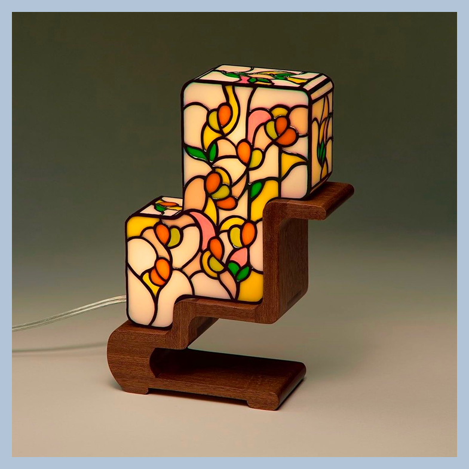
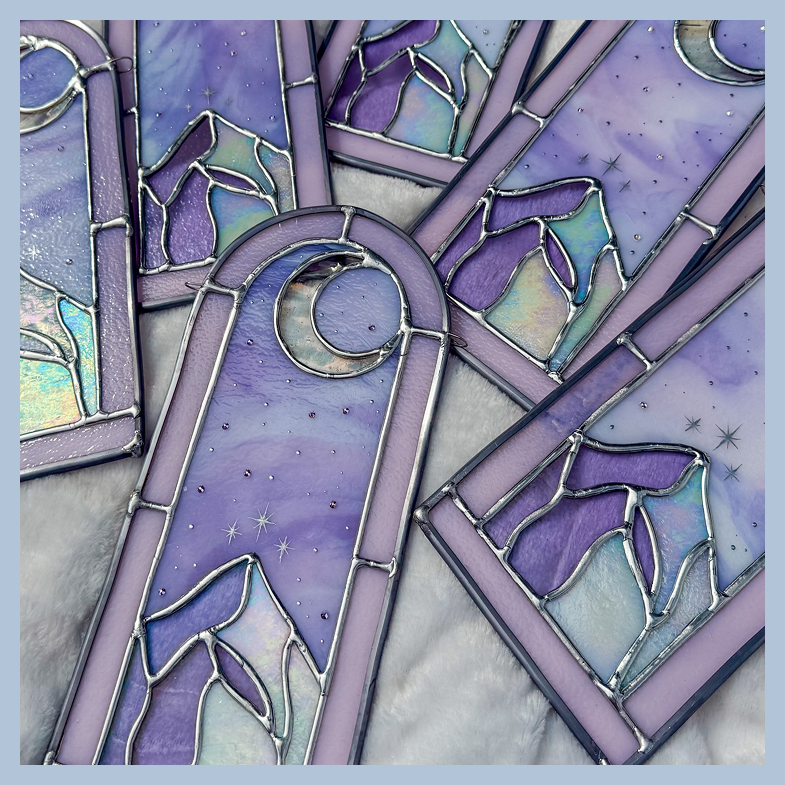
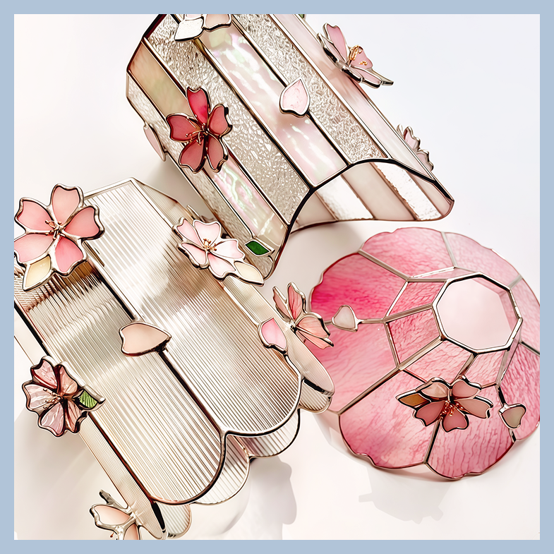

НАШИ ВИТРАЖИ
Искусство, которое согревает пространство изнутри

Светильник ступени тепла»
Светильник пропускает мягкий свет сквозь
витраж Тиффани в ступенчатой форме, напоминающей
садовую лестницу. Основание из темного ореха
и яркие стеклянные лепестки создают уют
и наполняют комнату красками. Ваше личное
маленькое солнце на столе.

Витраж-подвеска
Ночной свет и сияние звезд застыли в перламутровом
стекле этого витража. Цвет меняется с каждым
движением солнца,создавая в комнате сказку.
Повесьте его на окно как напоминание о магии.

Витражные плафоны
Витраж может быть невесомым. В этой коллекции мы
хотели передать момент, когда первые лепестки
касаются воды. Сочетание фактурного прозрачного
стекла и нежно-розовых градиентов создает
ощущение вечного мая у вас дома. Эти плафоны наполняют
комнату мягким, пудровым светом,
который сглаживает все острые углы и дарит покой.